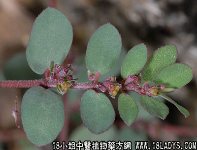

别名：细叶飞扬草、细飞扬、乳汁草。
植物名：千根草。
生长环境：本品为一年生、匍伏状草本。生于郊外草地上。
分布：广布于全球热带，广州普遍分布。
入药部分：全草。
采集期：夏、秋季。
自采地点：荒地、郊野。
性味：性微凉。
功能：解毒、干水收敛、止痒。
主治、用量和用法：飞疡疮、天疱疮、烂头胎毒、皮肤痕痒，生用1至2两，或干用5钱至1两，清水煎，外洗患处。
验方：（治烂头飞疡方）干小飞扬、干大小飞扬、干老虎脷各5钱，清水煎服，外洗患处。
（方解）烂头飞疡因湿热而起，本方以小飞扬草收敛水湿，大飞扬草清热解毒，老虎脷止痕痒而祛毒。三味组成，煎水外洗患处，能治因湿毒而引起之皮肤疾患。
（方歌）飞扬草治烂头疡，大小飞扬两洽商，加入五钱老虎脷，煎汤熏洗效无双。